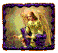

Australia's premier Spanish language Mexican punk band
This was Cerveza's first media release publicising their first non-campus gig. This was issued in July 1991. As a historical note, Nirvana made the list of bands better than Cerveza as at the time of writing they were believe to be a four piece and on the strength of "Bleach" sounded like they would be more than a match for us if it came to blows.
There's been a lot of crap written about bands ever since we invented rock'n'roll. Arguments over who is the best band abound, and are virtually impossible to resolve within the current framework of debate.
That is until Cerveza y Putas invented the absolutely infallible method of determining worth of bands. If two band are together in the same room, the better band is the one which can drink more and then start a fight which they win.
Consequently, Cerveza y Putas are a great band, and challenge any band in Adelaide, or indeed the world, to a drinking competition followed by a punch-up.
As an example, RatCat, teen pop sensations that they are, have sold a lot more records than us, but we could drink them under the table and then beat the shit out of them. For a start, there's only three of them which gives us an obvious numerical advantage. Add this to the fact that Simon Day is an absolute pillow and would last about 3 seconds under the flailing lagered assault of Putas' singer David Penberthy. The other two, whose names no-one can remember, would be an absolute pushover. Putas 1, RatCat 0.
Applying this theory, here is a comprehensive list of bands that we are better than, are better than us, and those we reckon we could give a good run fo rtheir money.
BANDS WE ARE BETTER THAN
- The Hummingbirds (Simon Holmes can't fight for toffee)
- The Falling Joys
- The Clouds
- The Jaynes
- 7 Reasons Why (there may be twenty three of them, but they don't like a drink half as much as us and we're more aggressive)
- R.E.M.
- Jesus Jones (they don't drink on stage)
- The Mandelbrot Set (too much eccy, not enough lager)
- Sonic Youth
- Capital F
- Handsome Devils
- TISM ("whinging precious girls")
BANDS WHO ARE BETTER THAN US
- The Plague
- The Iron Sheiks
- The Clowns of Decadence
- Nirvana
- The Replacements
BANDS WE DESERVE A SHOT AT
- My Love Pumpkin
- Aunty Raelene
- The Exploding White Mice (getting old and slow on their feet)
- The Pixies
- Dinosaur Jr (too lazy to fight)
Cerveza y Putas are supporting Bob Mould at the Tivoli on Sunday August 4th. Come along early to see the better band and then stick around for the drinking and the fight. To give him a chance, we'll only put up our best two drinkers against him. Bob Mould may have stood a chance when he was with Hüsker Dü, but on his own he's easy.
Cerveza y Putas are:
Vocals: David Penberthy
Guitar: Paul Champion
Bas: Dave Krantz
Drums: Ben Allen
****
From the Advertiser, December 12, 1991
|  |  |
 |
 |
| home | Here and Now | A Critical Perspective |
Nuestro Propio Animal |
site design, scripting and shockwave audio by virtual artists and paul champion. hosted by virtual artists.